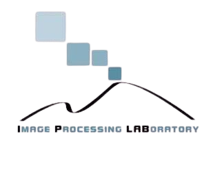
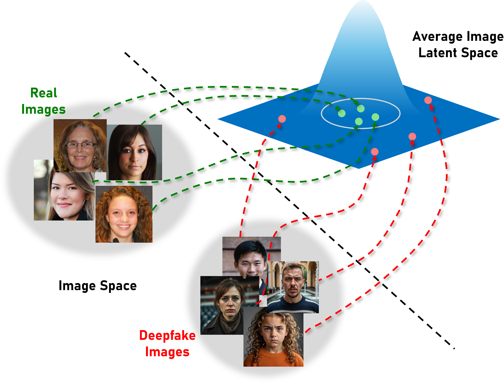
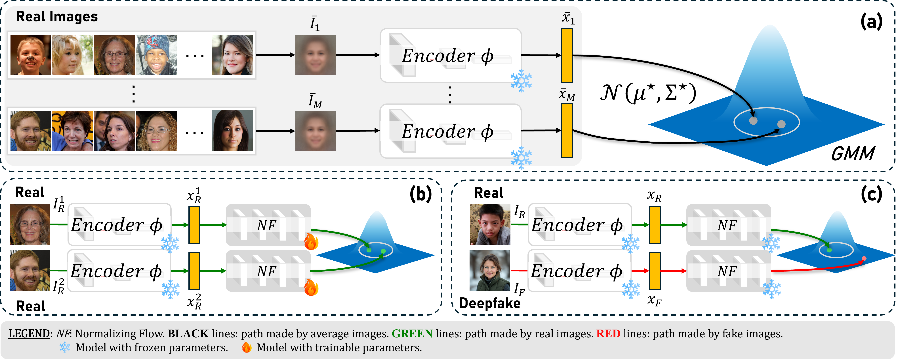
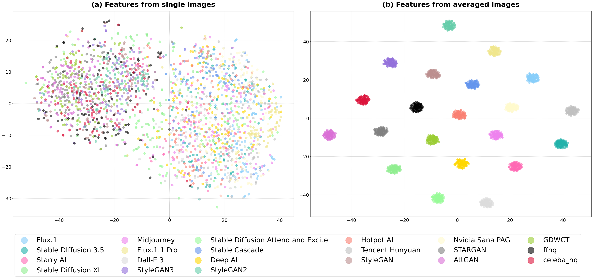

ECCV 2026

In this work, we introduce µFlow, a one-class deepfake detector trained only on real images without relying on pseudo-deepfakes or synthetic artifacts. Our approach builds on the observation that averaging multiple images amplifies consistent generative traces, producing highly discriminative feature representations. We leverage this property by modelling the distribution of features extracted from averaged images and training a normalizing flow to align the feature space of individual images with this distribution. This alignment yields a likelihood-based criterion that separates real and fake samples while promoting strong generalisation.
We evaluate µFlow on a fully out-of-distribution setting, where both real and fake datasets are unseen during training. Experimental results show that our method significantly outperforms state-of-the-art detectors.


Evaluated in a fully out-of-distribution setting across 19 unseen generators (GANs + open/closed-source DMs) from the WILD dataset.
Out-of-distribution AUC and AP (%) vs the state of the art. Competitors are trained on real + fakes; µFlow uses real images only. Each panel omits the in-domain family (the one used for training). Bold = best, underline = second. Swipe / use the tabs to switch training regime →
| Method | DM-CS | DM-OS | Average | |||
|---|---|---|---|---|---|---|
| AUC | AP | AUC | AP | AUC | AP | |
| DFX-SN MTA25 | 71.7 | 69.9 | 69.0 | 67.0 | 70.1 | 68.0 |
| FreqNet AAAI24 | 75.5 | 74.1 | 73.2 | 74.2 | 74.3 | 75.4 |
| NPR CVPR24 | 79.2 | 78.9 | 77.3 | 80.1 | 78.2 | 79.7 |
| ODDN AAAI25 | 83.2 | 84.8 | 82.9 | 85.3 | 83.6 | 85.0 |
| D³ CVPR25 | 82.0 | 88.8 | 83.1 | 87.0 | 82.0 | 87.9 |
| µFlow (Ours) | 96.8 | 95.9 | 96.8 | 96.1 | 96.8 | 96.0 |
| Method | GANs | DM-OS | Average | |||
|---|---|---|---|---|---|---|
| AUC | AP | AUC | AP | AUC | AP | |
| DFX-SN MTA25 | 67.0 | 66.1 | 84.6 | 86.0 | 75.8 | 76.0 |
| FreqNet AAAI24 | 66.0 | 65.3 | 94.0 | 92.8 | 80.0 | 79.0 |
| NPR CVPR24 | 68.5 | 69.1 | 93.4 | 92.7 | 81.0 | 80.9 |
| ODDN AAAI25 | 79.2 | 75.9 | 98.5 | 91.7 | 88.8 | 83.8 |
| D³ CVPR25 | 83.4 | 85.0 | 97.9 | 99.9 | 90.7 | 92.5 |
| µFlow (Ours) | 90.4 | 93.9 | 96.8 | 96.1 | 93.6 | 95.0 |
| Method | GANs | DM-CS | Average | |||
|---|---|---|---|---|---|---|
| AUC | AP | AUC | AP | AUC | AP | |
| DFX-SN MTA25 | 70.4 | 68.6 | 80.7 | 83.0 | 75.6 | 75.8 |
| FreqNet AAAI24 | 67.6 | 70.7 | 94.7 | 94.4 | 81.2 | 82.6 |
| NPR CVPR24 | 68.7 | 73.5 | 97.7 | 98.0 | 83.2 | 85.8 |
| ODDN AAAI25 | 71.2 | 70.3 | 99.5 | 96.7 | 85.3 | 83.5 |
| D³ CVPR25 | 76.6 | 77.9 | 98.0 | 97.1 | 87.3 | 87.5 |
| µFlow (Ours) | 90.4 | 93.9 | 96.8 | 95.9 | 93.6 | 94.9 |
| Method | GANs | DM-CS | DM-OS | Average | ||||
|---|---|---|---|---|---|---|---|---|
| AUC | AP | AUC | AP | AUC | AP | AUC | AP | |
| DFX-SN MTA25 | 77.9 | 77.1 | 80.4 | 82.2 | 81.9 | 82.0 | 80.1 | 80.4 |
| FreqNet AAAI24 | 86.0 | 87.5 | 84.6 | 84.6 | 73.2 | 76.8 | 81.3 | 83.0 |
| NPR CVPR24 | 89.8 | 89.5 | 96.5 | 90.2 | 95.7 | 95.4 | 94.0 | 91.7 |
| ODDN AAAI25 | 91.5 | 93.5 | 83.3 | 86.5 | 86.3 | 85.6 | 87.0 | 88.5 |
| D³ CVPR25 | 92.5 | 93.7 | 94.6 | 92.6 | 96.5 | 96.4 | 94.5 | 94.2 |
| µFlow (Ours) | 90.4 | 93.9 | 96.8 | 95.9 | 96.8 | 96.1 | 94.7 | 95.3 |
| Method | GANs | DM-CS | DM-OS | Average | ||||
|---|---|---|---|---|---|---|---|---|
| AUC | AP | AUC | AP | AUC | AP | AUC | AP | |
| PCL+I2G ICCV21 | 86.0 | 92.2 | 78.7 | 69.3 | 73.0 | 68.3 | 79.2 | 76.6 |
| SBI CVPR22 | 86.8 | 93.0 | 79.4 | 69.7 | 73.2 | 68.5 | 79.8 | 77.1 |
| AUNet CVPR23 | 87.0 | 93.3 | 80.0 | 70.2 | 73.5 | 70.1 | 80.2 | 77.9 |
| LAA-Net CVPR24 | 88.2 | 94.2 | 84.1 | 81.0 | 82.3 | 83.3 | 84.9 | 86.2 |
| µFlow (Ours) | 90.4 | 93.9 | 96.8 | 95.9 | 96.8 | 96.1 | 94.7 | 95.3 |
Performance of µFlow under content-preserving degradations — evaluated in the same fully out-of-distribution setting.
| Transformation | ACC (%) | AUC (%) | AP (%) |
|---|---|---|---|
| Resize | 90.6 | 91.5 | 88.4 |
| Horizontal Flip | 92.6 | 92.7 | 91.9 |
| Gaussian Noise | 89.7 | 89.9 | 91.7 |
| Salt & Pepper | 90.8 | 91.7 | 89.6 |
| Average | 90.9 | 91.5 | 90.4 |
If you find our work useful, please consider citing:
@inproceedings{pontorno2026mu,
title={{{$\mu$Flow}: Leveraging Average Images for Improving Generalisation of Deepfake Faces Detectors}},
author={Pontorno, Orazio and Litrico, Mattia and Guarnera, Luca and Giuffrida, Mario Valerio and Battiato, Sebastiano},
booktitle={European Conference on Computer Vision},
year={2026},
organization={Springer}
}
